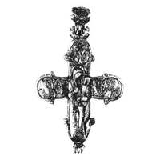

Catalog › CE-1001 · KOR2003-III.1.1.27
Encolpion întreg cu inel fațetat, găsit într-un săculeț de mătase, puternic uzat, contururi în niello
sec. a doua jumătate XII (1151–1200) · Mstislavl, regiunea Mogilev, Belarus
double-sided reliquary cross (enkolpion), aramă; c. a doua jumătate XII (1151–1200); found at Mstislavl, regiunea Mogilev, Belarus.


Identificare
- Categorie
- Encolpion bivalv (relicvar)
- Material
- Aramă
- Tehnică
- Turnare în relief; Gravare (incizie); Niello
- Stare
- Întreagă
- Dimensiuni
- Î 90 × L 75 mm
Iconografie
- Descriere avers
- Encolpion întreg cu inel de agățare fațetat, găsit într-un săculeț de mătase, puternic frecat; marginile sunt încadrate cu crestături oblice. S-au păstrat contururile de bază ale imaginilor, redate prin linii adânci umplute cu niello, și rare urme de finisare cu dalta.
Datare și atribuire
- Datare
- sec. a doua jumătate XII (1151–1200)
- Centru
- Necunoscut
- Tipologie
- Korzukhina–Peskova 2003, tip III 1 1
Descoperire
- Localitate
- Mstislavl
- Regiune
- regiunea Mogilev
- Țară
- Belarus
- Context
- Fortificație
- Anul
- 1962
Păstrare și referințe
- Bibliografie
- G. F. Korzukhina, A. A. Peskova, Древнерусские энколпионы. Нагрудные кресты-реликварии XI–XIII вв., Sankt-Petersburg, 2003 [Korzukhina–Peskova 2003], p. 105, cat. nr. III 1 1/27, reprodusă la Табл. 50 (planșe, p. 292). Bibliografie citată în sursă: Алексеев 1971, 30, рис. 6; Алексеев 1974, 213–214, № 20, рис. 4, 4а, 5; Алексеев 1980, рис. 2, 5, 6.
- Figura
- Табл. 50
- Planșe
- Korzukhina–Peskova 2003, Табл. 50 (planșă fără paginație proprie în PDF; p. 292 tipărită)
- Observații
- Datare după Peskova: sec. a doua jumătate XII. Circumstanțe: Săpături L. V. Alekseev, 1962, pe detinețul Mstislavl, în stratul sec. XIII (săpătura VI, careul E, demontarea bandei dintre săpăturile V și VI, adâncimea de la R 286). Proveniență în colecție: după comunicarea orală a lui L. V. Alekseev, după restaurare encolpionul a fost predat Muzeului din Mogilev; locul de păstrare nu este stabilit. Inscripțiile sunt șterse; se vede doar o linie despărțitoare orizontală pe capătul stâng al crucii de pe revers. Sursa notează lângă Alekseev 1971 o precizare privind calitatea reproducerii (de verificat pe pagina PDF 106). Coordonate: nu sunt date în sursă.
Citare: Corpus Encolpiorum, CE-1001, Encolpion întreg cu inel fațetat, găsit într-un săculeț de mătase, puternic uzat, contururi în niello, https://vitaliejosanu1979-ux.github.io/primul-meu-proiect/piese/KOR2003-III.1.1.27/ (accesat 2026-10-17).